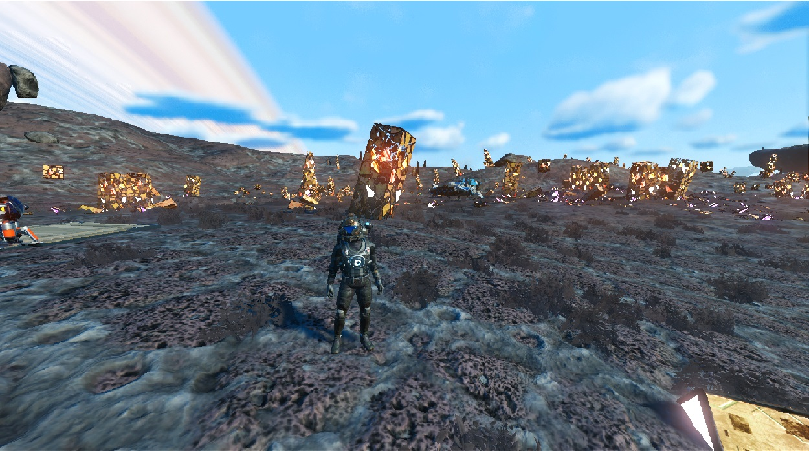
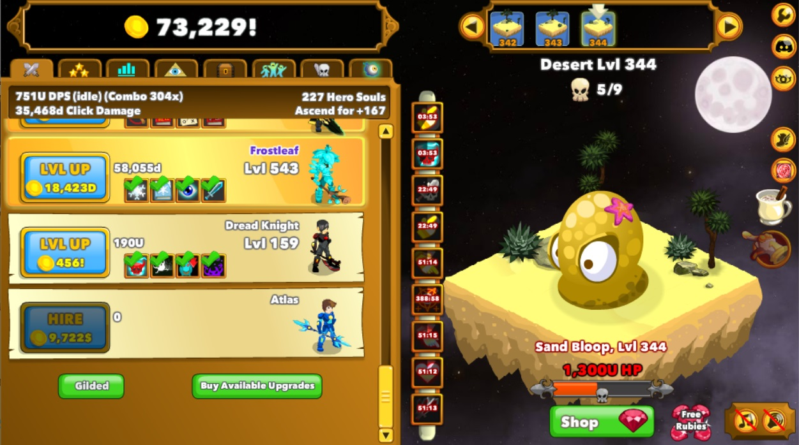
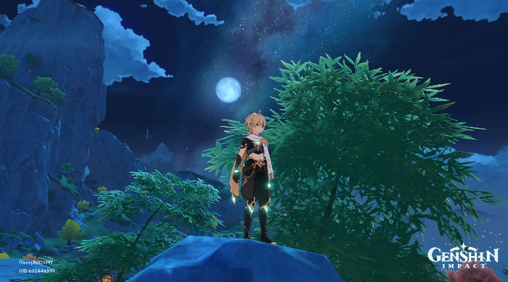

One hobby that I have is playing games. While games are really pleasing, they tend to be looked down on because usually,
people spend a lot of time on them, but gaming has its benefits, for example, games have been known to help with multi-tasking,
and improve our mental flexibility. Some games are meant to be educational and there are games that aren't so helpful
in that area.
Why I like my hobby
I enjoy playing games because they relax me and will distract me a little when times get tough. Many games expand my ways of
thinking or give me new ideas. Some games I will play just to listen to music and not think about what I am doing when playing.
Growing up with games has always made them feel nostalgic, so I don't plan to stop playing games anytime soon.

Game: No Man's Sky

Game: Clicker Heroes
My issue with my hobby
The biggest issue with my hobby is that it can be a huge time-waster, and as I grow older I notice how much time I spend
playing games rather than using it for productivity. Having new ideas and alternate ways of thinking is wasted, if they
are not implemented and not being used. Overall though I still play games and enjoy them, but I have started trying to limit
myself to prevent playing excessively.
Current favorite game
Genshin impact is a game I have been playing recently and is currently my go-to game. The game has really soothing music
and there is a lot of depth even though the game is still in development. You can spend a good amount of time on the game
in the beginning, but I noticed that when I play it I can limit myself more and how long I play. The game gives out daily
commissions and daily resin. I usually spend half my game time on these daily tasks. I spend about an hour each day playing
this game, but it's the only game I play. I'm not entirely sure if I just want to learn more about my future objectives
nowadays or if timing myself with free time helped me get a little more productive.

Game: Genshin Impact
Interested in playing games yourself?
Here are some sites to get started: